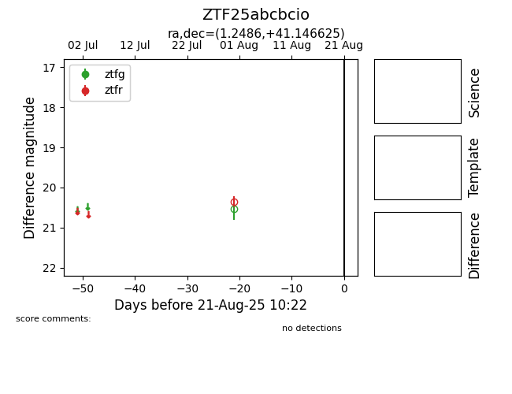

Target ZTF25abcbcio at 2025-08-21 10:22, see:
FINK: fink-portal.org/ZTF25abcbcio
Lasair: lasair-ztf.lsst.ac.uk/objects/ZTF25abcbcio
ALeRCE: alerce.online/object/ZTF25abcbcio
alt names
ZTF25abcbcio (ztf,alerce)
coordinates:
equatorial (ra, dec) = (1.2486,+41.14662)
galactic (l, b) = (113.5967,-20.88174)
photometry
